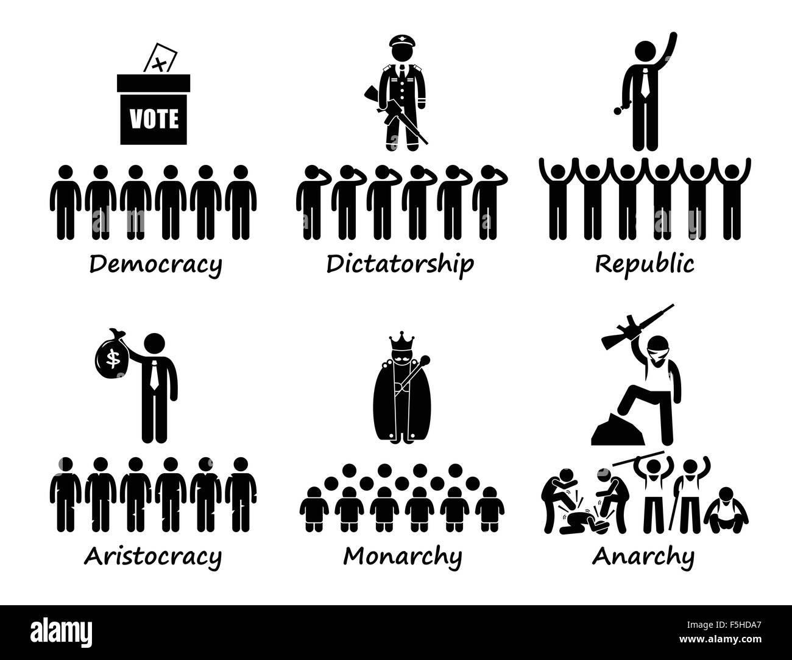

Forms of Government
These different systems characterized by how many people are in charge, how they are chosen, and how they rule have massive consequences for the relationship between governments and their people. Governments we describe today as democracies are, for the most part, republics or representative democracies.
People vote on who should be the leader of the country, the president. And they also separately vote on who should represent them in the legislature.

Sometimes the president and the majority of the legislators in Congress belong to different political parties
In the case of France, the people directly elect the president and most legislators. But then the president appoints a less powerful prime minister who works with the legislature to make laws and help run the government. These governments tend to have rules on what they can and cannot do. And in healthy democracies, there is typically an independent court system and a free press.
These institutions provide checks on government power and can protect the rights of citizens
In contrast to democracy, many countries have authoritarian governments with just one person or a small group of people in charge and few checks on their power. Authoritarian leaders might use titles like president and prime minister, but that doesn't mean they are democratic. They might see their governments decisive leadership style as superior to that of slow-moving democracies and believe authoritarian governments can better promote economic growth and order at home or expand influence abroad, even if it means sacrificing some personal liberties. Frequently, governments lie somewhere in the space between the two poles of democracy and authoritarianism.
These governments may win real elections, but ignore minority rights, or they might manipulate elections. Even the most repressive authoritarian systems can be toppled or transformed by people taking to the streets in revolutions or gradually become more democratic through reforms. At the same time, strong democracies can drift toward authoritarianism, a process that is often referred to as democratic backsliding in our global era, government leaders make decisions on today's toughest challenges, like how to address climate change, or terrorism, or a pandemic where your government lies on the spectrum between democracy and authoritarianism.
